海と、退役した艦と、昼の皿
アメリカ（サンディエゴ）2024
サンディエゴは、海と空が広い街でした。港にはヨットが並び、その奥に、退役した空母USSミッドウェイが博物館として静かに浮かんでいます。戦の道具がいま、…

島々を渡る祈りの記憶
インドネシア（ジャカルタ・ジョグジャカルタ・バリ）2024-2025
年末年始を、赤道直下の群島で過ごしてみたいと思いました。大都市の熱気と、千年前の石の記憶と、祈りに満ちた棚田。三つの異なる時間が同じ国の中に重なってい…

砂の記憶、ナイルの呼吸
エジプト（カイロ・ルクソール）2024
四千年という時間の単位を、私はうまく呑み込めずにいました。エジプトでは、古代と現代が同じ通りに並んでいます。客引きの声、礼拝の呼びかけ、観光バスのクラ…

湿気と金箔のあいだで
タイ（バンコク・チェンマイ）2025
雨季のタイへ、ひとりで降り立ちました。バンコクの熱気、アユタヤの遺構、チェンマイの古都。三つの街は同じ国にありながら、流れる時間の速度がまるで違いまし…

霧の湾と、年越しの碗
ベトナム（ハノイ・ハロン湾）2023
霧のハノイは、想像していたよりずっと冷たく、湿っていました。北部の冬は、観光地の華やかさより、土地の素顔を見せてくれると聞いていました。年越しを跨ぐ静…
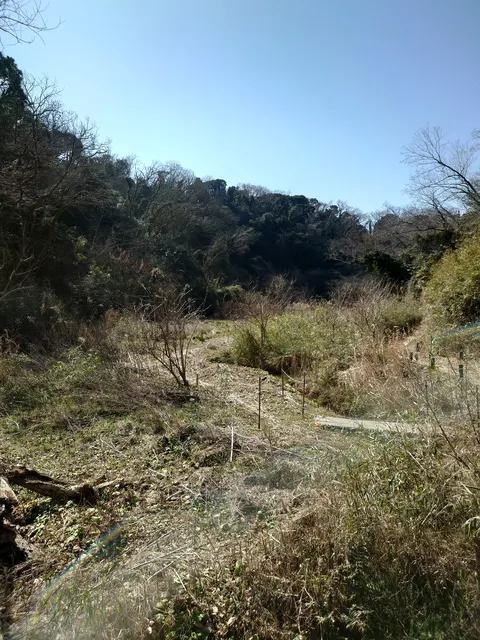
歩幅で測る、東京の余白
おでかけ
特別な目的地ではなく、足の向くままに東京とその周辺をめぐった、断片の旅です。木道の続く森から、海辺の岩場、夜景に沈む街、新しい年の朝まで。一人で歩いて…
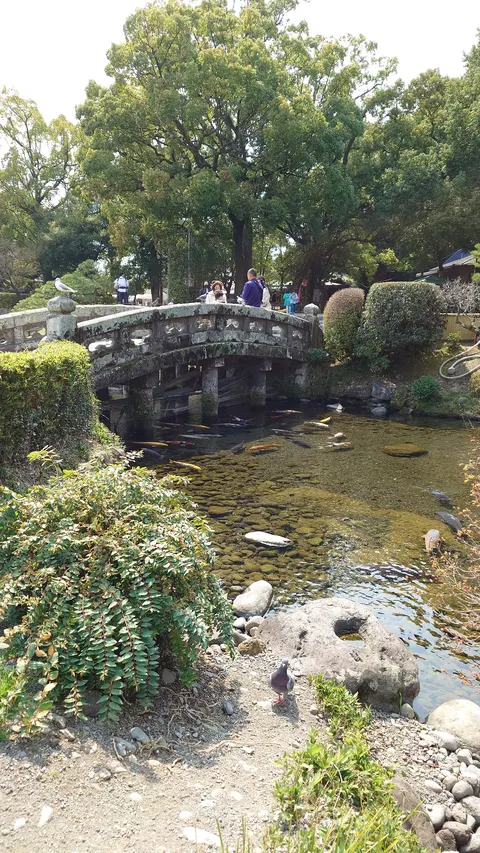
湯けむりの底、土地が呼吸する
九州（別府温泉）2025
三月下旬、私は一人で九州へ向かいました。別府は街全体が呼吸する場所です。路地のどこを歩いても、足元から白い湯気が立ち上り、硫黄の匂いが髪に染みつきます…
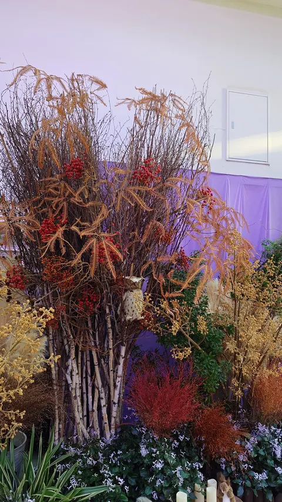
秋晴れ、檻のないまなざし
動物園2025
十一月のよく晴れた午後、ふと思い立って動物園へ行きました。子どもの頃ぶりかもしれません。一人で動物園というのは少し気恥ずかしいけれど、大人になってから…
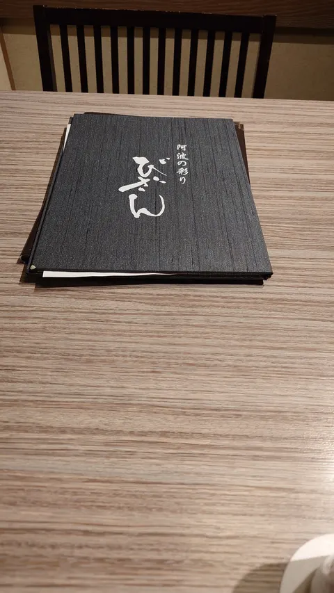
渦と藍、四国の余白
四国（鳴門・徳島）2025
ゴールデンウィーク、私はひとり徳島へ向かいました。鳴門の渦潮、藍染の青、瀬戸内に沈む夕日、夜の露天風呂、そして連休最後の無人駅。観光地の華やかさよりも…
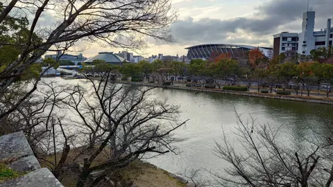
祈りと庭、年の瀬の山陽
広島・倉敷・岡山2025
年の瀬の数日間、私は山陽路を歩きました。広島で原爆ドームと向き合い、宮島の朱い鳥居をくぐり、岡山後楽園で冬枯れの庭を眺め、瀬戸内のアートに触れる。倉敷…
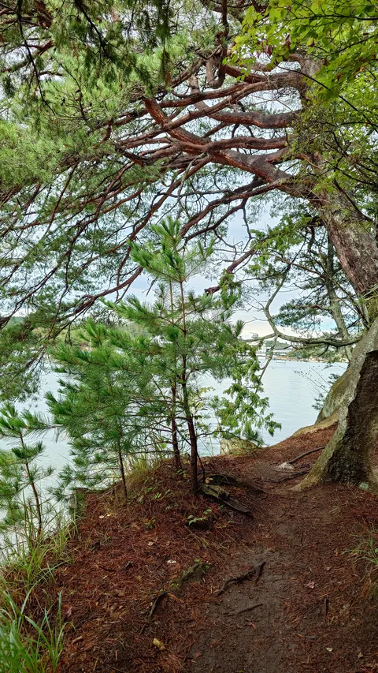
松島、半日の海
日帰り旅行（松島）2024
秋分のころ、私は仙台から松島へ日帰りで足を延ばしました。湾に浮かぶ無数の小島を眺め、潮風の通る庭を歩き、夜は地のものを器に並べてもらう。それだけで、一…
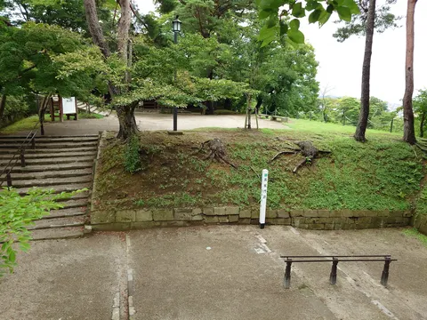
雨の北東北、緑の余韻
東北旅行2024
夏の盆休み、私は東北新幹線に乗り込みました。仙台、三陸の海、八甲田、十和田、ねぶたの夜。天気はずっと曇りや雨で、強い日差しはほとんどありませんでした。…
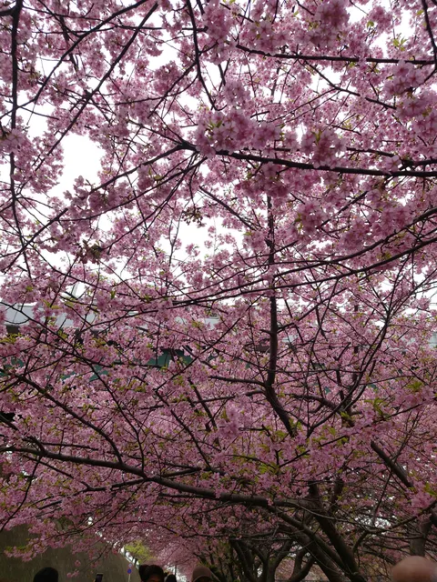
二月、いちばん早い春へ
河津桜（伊豆）2024
まだ冬のコートが手放せない二月、ひと足早く春に会いに伊豆へ向かいました。河津桜は本州の中で最も早く咲く桜のひとつです。賑わう川沿いから少しだけ外れて、…
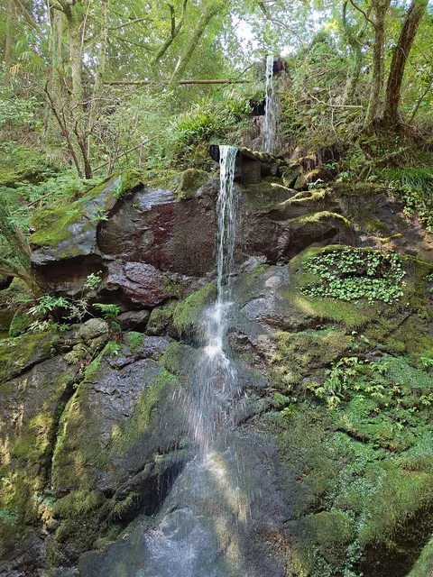
水音を聴きに、ひとり山へ
渓流おでかけ2024
八月の初め、暑さから逃れるように、私は渓流のある山あいの町へ出かけました。長い旅程ではなく、半日だけの小さな遠出。けれど水の音と山の影だけで、心の温度…
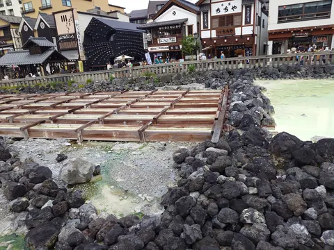
湯畑の音、夜と朝のあいだ
温泉旅行2024 草津
七月の終わり、私は草津へ一人で向かいました。湯畑を中心に円を描くように広がる町は、昼と夜でまったく違う表情を見せます。硫黄の匂いに包まれながら、夜の青…
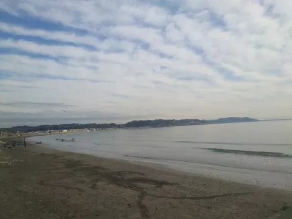
冬の海、光のさざなみ
鎌倉・湘南2023
クリスマスイブの鎌倉・湘南へ、海を見るためだけに出かけました。誰かと過ごす日に、あえて一人で海に向かうのが私の小さな儀式のようなものです。冬の相模湾は…
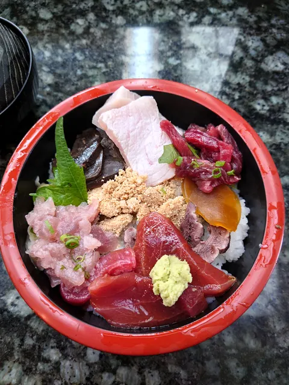
年末の三崎、海をひとつ
三浦半島2022年末
ベトナムへ発つ前日、私は神奈川県三浦半島の南端、三崎に立ち寄りました。半島の突端の港町は、年の瀬の冷たい風のなかで静かに息をしていました。海光に目を細…